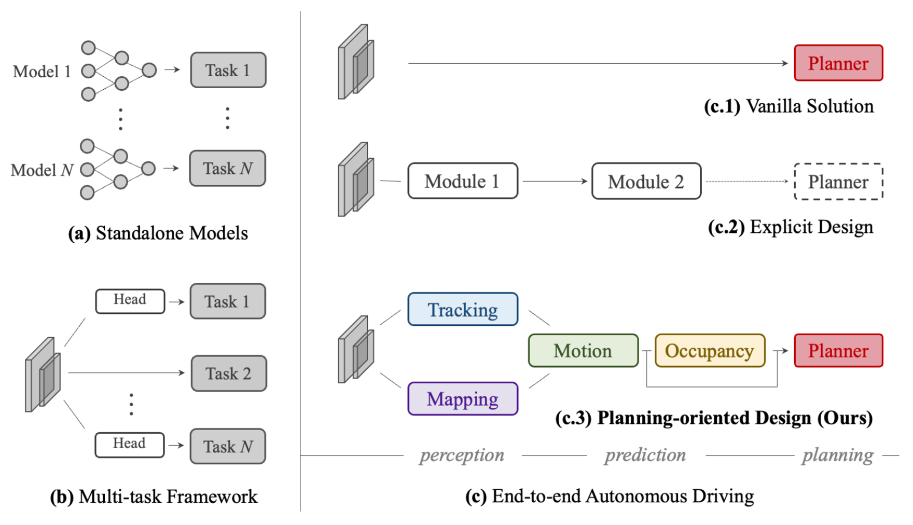
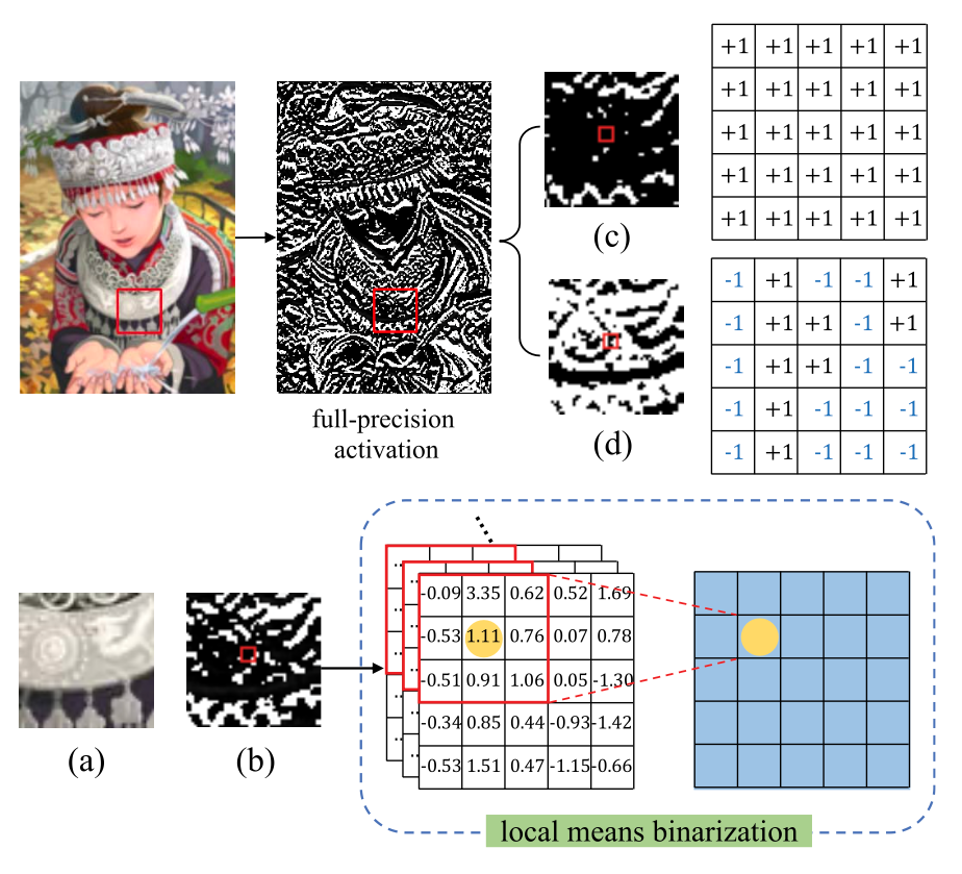
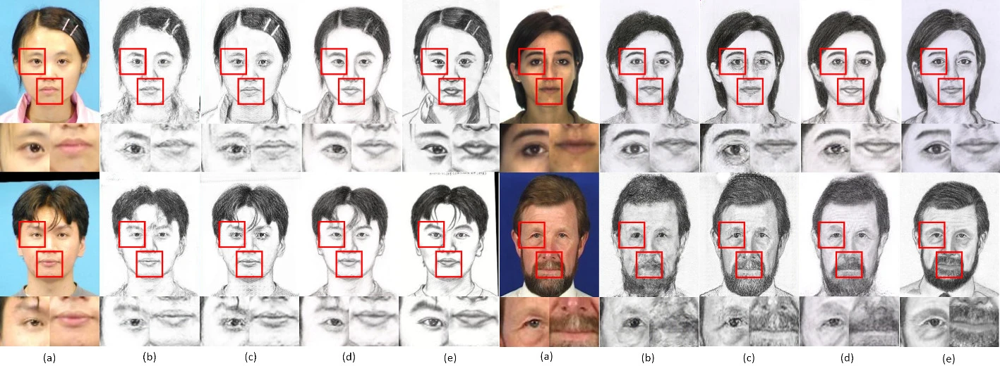
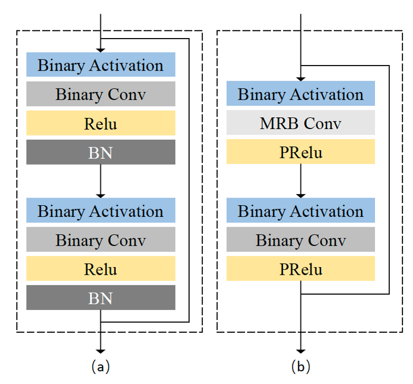

Selected Works
(* Equal contribution, † Interns, # Corresponding authors)
Planning-oriented Autonomous Driving
Yihan Hu*, Jiazhi Yang*, Li Chen*#, Keyu Li*†, Chonghao Sima, Xizhou Zhu, Siqi Chai, Senyao Du, Tianwei Lin, Wenhai Wang, Lewei Lu, Xiaosong Jia, Qiang Liu, Jifeng Dai, Yu Qiao, Hongyang Li#;
CVPR, 2023(Best Paper Award)
[Paper] [Code] [Report]
[BibTex]
[Report]
[BibTex]
First time to unify full-stack AD tasks!
Yihan Hu*, Jiazhi Yang*, Li Chen*#, Keyu Li*†, Chonghao Sima, Xizhou Zhu, Siqi Chai, Senyao Du, Tianwei Lin, Wenhai Wang, Lewei Lu, Xiaosong Jia, Qiang Liu, Jifeng Dai, Yu Qiao, Hongyang Li#;
CVPR, 2023
[Paper] [Code]
[Report]
[BibTex]


